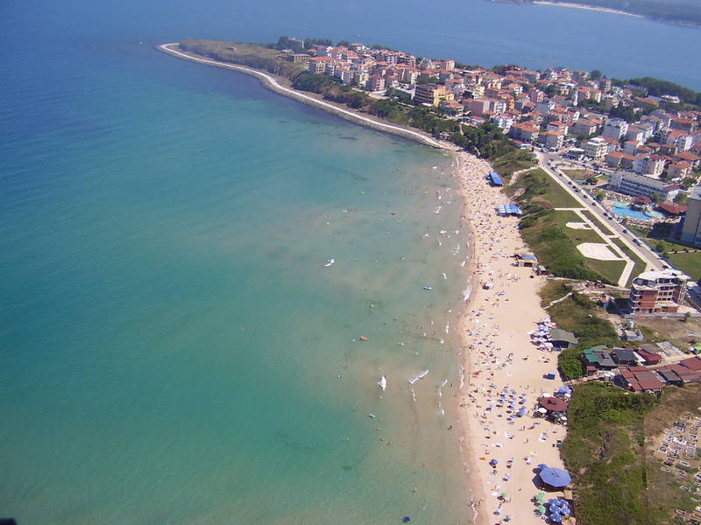
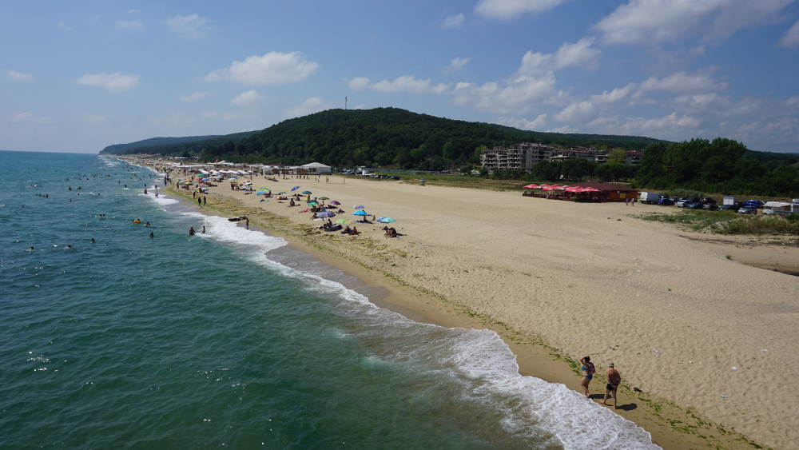
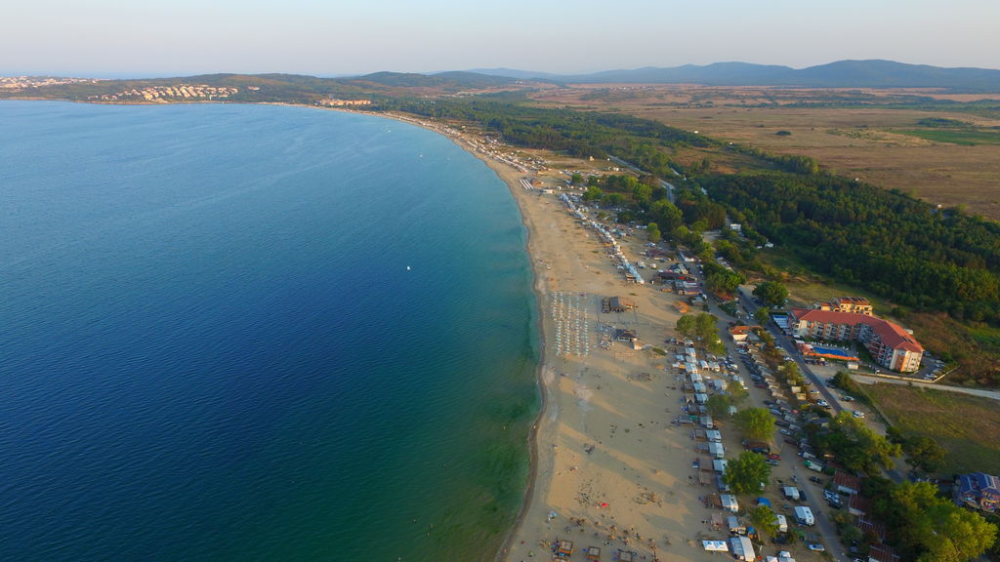
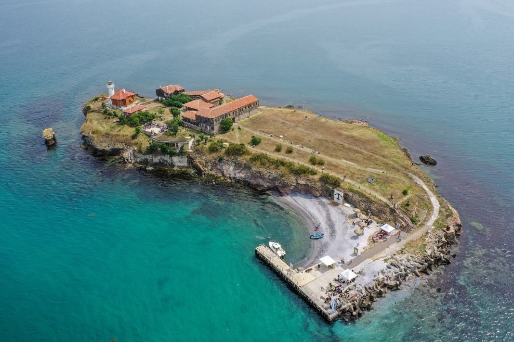
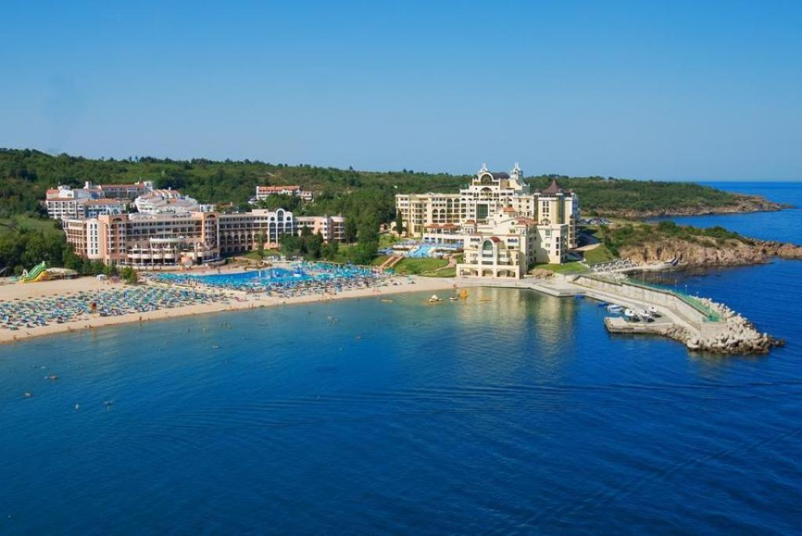

Искате да посетите Българското Черноморие! Чували сте за Слънчев бряг, Созопол, Несебър, Варна, Бургас, Златни пясъци, Албена и редица други плажове на България? Отлично! Избрали сте приветливи плажове и брегове, на които ще изживеете незабравими моменти!
Българската брегова линия е дълга 378 км., като нейните форма и релеф са образували много красиви черноморски места със скалисти брегове, пясъчни дюни и характерните за страната дълги и широки пясъчни ивици.
Плажовете по морето на България са над сто. Българското Черноморие се дели на северно и южно. Нос Емине е мястото, където Стара планина се среща с морето. Тази точка разделя Черноморието мислено на две части . Северната част на Българското Черноморие се простира между Дуранкулак и нос Емине, а южната между Елените и Резово. По северното крайбрежие има два типа плажове – дълги и диви пясъчни ивици, част от които не са засегнати от строителни процеси. Останалите плажове са с по-скалист релеф. Част от бреговете в северната половина са трудно достъпни и са известни основно сред местните жители. Природата в този регион е изключително красива. Посетителите могат да видят крайбрежни езера и голямо разнообразие от защитени птици и риби, намиращи се близо до плажовете.
Южната крайбрежна ивица на България се състой от дълги и просторни пясъчни заливи. По-голяма част от плажовете в тази част са лесно достъпни, много популярни и винаги пълни с хора.
Природата по южното Черноморие също е много красива със своите реки и гори. Посетителите на България през лятото могат да релаксират в палатки по дивите плажове, в бунгала или в някой от многото хотели, намиращи се в близост до морето.
България е прекрасна морска дестинация, в която услугите са на много високо ниво, а инфраструктурата в страната се подобрява с всяка изминала година. Желаещите да прекарат своята лятна ваканция по морето на България, могат да се възползват от различни ценови пакети и различни възможности за настаняване (от луксозни хотели, малки семейни хотели и дори стайно настаняване с хазяи).
Черно море е с ниска соленост и през летния сезон температурата на водата е между 22°С и 26°С. Като на север температурата е по-ниска от тази на юг. В морето няма акули и други видове, представляващи опасност за човешкия живот. Това прави българските плажове изключително привлекателни за любителите на къпането в морето.
В горепосочената дължина на черноморско крайбрежие не влизат малките български острови, разположени в близост до бреговете. Това са Свети Иван, Свети Кирик, Света Анастасия, Свети Петър, Змийски остров (Свети Тома), Птичи остров и Русалка . Част от островите могат да бъдат посещавани от туристи, като през последните години остров Света Анастасия бе обновен и представлява огромен интерес за бургазлии и гостите на града. Друга част от островите са дом за много защитени видове птици и някои животни.
През 2010 година 11 български плажа получават отличителната оценка “Син Флаг”, която е свидетелство за чистотата на района и изпълнени критерии за получаването й. Плажовете заслужили тази награда са плаж Албена, плаж Слънчев ден (к.к. Св. св. Константин и Елена), плаж Елените, Централен плаж на Свети влас, Плаж при яхтеното пристанище на Свети Влас, Северен плаж на Слънчев бряг, Южен плаж на Слънчев бряг, централен плаж Поморие, Северен плаж – Бургас, плаж Харманите (в Созопол) и плаж Дюни.
